MVP Battle Dolls (MVP戰鬥娃娃)
Die Top-Tier-Variante des Battle-Doll-Systems — Puppen, die von MVP-Bossen droppen und deutlich stärkere Daily-Rewards liefern als die Normal-Variante.
🎎 Was sind MVP Battle Dolls?
MVP Battle Dolls droppen exklusiv von MVP-Bossen. Sie folgen derselben Mechanik wie Normal Dolls (nicht verbraucht, mehr Kopien = besserer Reward-Tier bei NPC Rex in prontera 260 268), bringen aber deutlich wertvollere Reward-Boxen.
📦 Reward-Liste (34 MVP Dolls)
Alle aktuell verfügbaren MVP Battle Dolls mit ihren offiziellen Reward-Tabellen (neueste zuerst):
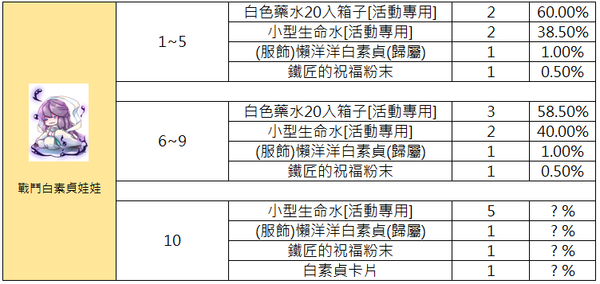
📋 Drop- und Belohnungsrate für Battle White Lady Doll — Deutsch aufklappen
Diese Tabelle zeigt die Belohnungen und Gewinnchancen für das Item 'Battle White Lady Doll', unterteilt nach verschiedenen Stufen oder Etappen.
| Stufe | Gegenstand | Anzahl | Wahrscheinlichkeit |
|---|---|---|---|
| 1~5 | White Potion Box 20 [Event] | 2 | 60.00% |
| 1~5 | Small Life Potion [Event] | 2 | 38.50% |
| 1~5 | (Costume) Lazy White Lady (Bound) | 1 | 1.00% |
| 1~5 | Blacksmith Blessing Powder | 1 | 0.50% |
| 6~9 | White Potion Box 20 [Event] | 3 | 58.50% |
| 6~9 | Small Life Potion [Event] | 2 | 40.00% |
| 6~9 | (Costume) Lazy White Lady (Bound) | 1 | 1.00% |
| 6~9 | Blacksmith Blessing Powder | 1 | 0.50% |
| 10 | Small Life Potion [Event] | 5 | ? % |
| 10 | (Costume) Lazy White Lady (Bound) | 1 | ? % |
| 10 | Blacksmith Blessing Powder | 1 | ? % |
| 10 | White Lady Card | 1 | ? % |
Die Spalte 'Stufe' bezieht sich auf die Gruppierung der Ergebnisse. Das Symbol links zeigt die Battle White Lady Doll.
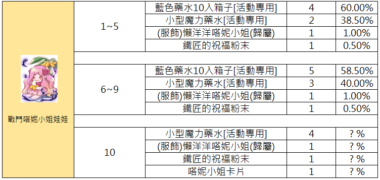
📋 Drop-Tabellen der Battle Tanys Doll — Deutsch aufklappen
Diese Tabelle zeigt die Drop-Wahrscheinlichkeiten für die Battle Tanys Doll, unterteilt nach verschiedenen Stufen.
| Stufe | Gegenstand | Menge | Wahrscheinlichkeit |
|---|---|---|---|
| 1~5 | Blue Potion Box (Event) | 4 | 60.00% |
| 1~5 | Small Mana Potion (Event) | 2 | 38.50% |
| 1~5 | (Costume) Lazy Tanys (Account Bound) | 1 | 1.00% |
| 1~5 | Blacksmith Blessing Powder | 1 | 0.50% |
| 6~9 | Blue Potion Box (Event) | 5 | 58.50% |
| 6~9 | Small Mana Potion (Event) | 3 | 40.00% |
| 6~9 | (Costume) Lazy Tanys (Account Bound) | 1 | 1.00% |
| 6~9 | Blacksmith Blessing Powder | 1 | 0.50% |
| 10 | Small Mana Potion (Event) | 4 | ? % |
| 10 | (Costume) Lazy Tanys (Account Bound) | 1 | ? % |
| 10 | Blacksmith Blessing Powder | 1 | ? % |
| 10 | Tanys Card | 1 | ? % |
Die im Bild gezeigte Entität heißt 'Battle Tanys Doll'. '歸屬' bedeutet, dass der Gegenstand an den Account gebunden ist.

📋 Belohnungstabelle für General Turtle — Deutsch aufklappen
Diese Tabelle zeigt die Belohnungen und Gewinnwahrscheinlichkeiten für das Event-Item 'General Turtle' basierend auf der Anzahl der Wiederholungen.
| Ziel | Wiederholungen | Belohnung | Menge | Wahrscheinlichkeit |
|---|---|---|---|---|
| General Turtle | 1~5 | White Potion Box 20 [Event Only] | 3 | 60.00% |
| General Turtle | 1~5 | Top Level Food Set [Event Only] | 1 | 38.50% |
| General Turtle | 1~5 | (Costume) Eye Patch (Bound) | 1 | 1.00% |
| General Turtle | 1~5 | Blacksmith Blessing Powder | 1 | 0.50% |
| General Turtle | 6~9 | White Potion Box 20 [Event Only] | 5 | 58.50% |
| General Turtle | 6~9 | Top Level Food Set [Event Only] | 1 | 40.00% |
| General Turtle | 6~9 | (Costume) Eye Patch (Bound) | 1 | 1.00% |
| General Turtle | 6~9 | Blacksmith Blessing Powder | 1 | 0.50% |
| General Turtle | 10 | Top Level Food Set [Event Only] | 2 | ?% |
| General Turtle | 10 | (Costume) Eye Patch (Bound) | 1 | ?% |
| General Turtle | 10 | Blacksmith Blessing Powder | 1 | ?% |
| General Turtle | 10 | General Turtle Card | 1 | ?% |
Die mit '?%' gekennzeichneten Werte geben an, dass die Wahrscheinlichkeit im Spiel nicht spezifiziert ist.

📋 Belohnungstabelle für Kampf-MvP-Puppen — Deutsch aufklappen
Diese Tabelle zeigt die Belohnungen und Gewinnchancen für das Besiegen von Kampf-MvP-Puppen, basierend auf der Anzahl der Wiederholungen.
| Ziel | Wiederholungsanzahl | Belohnung | Menge | Wahrscheinlichkeit |
|---|---|---|---|---|
| Battle MvP Doll | 1~5 | White Potion Box 20ea [Event] | 3 | 60.00% |
| Battle MvP Doll | 1~5 | Premium Food Set [Event] | 1 | 38.50% |
| Battle MvP Doll | 1~5 | (Costume) MvP Scelest Scarf [Bound] | 1 | 1.00% |
| Battle MvP Doll | 1~5 | Blacksmith Blessing Powder | 1 | 0.50% |
| Battle MvP Doll | 6~9 | White Potion Box 20ea [Event] | 5 | 58.50% |
| Battle MvP Doll | 6~9 | Premium Food Set [Event] | 1 | 40.00% |
| Battle MvP Doll | 6~9 | (Costume) MvP Scelest Scarf [Bound] | 1 | 1.00% |
| Battle MvP Doll | 6~9 | Blacksmith Blessing Powder | 1 | 0.50% |
| Battle MvP Doll | 10 | Premium Food Set [Event] | 2 | ? % |
| Battle MvP Doll | 10 | (Costume) MvP Scelest Scarf [Bound] | 1 | ? % |
| Battle MvP Doll | 10 | Blacksmith Blessing Powder | 1 | ? % |
| Battle MvP Doll | 10 | MvP Scelest Card | 1 | ? % |
Die mit '? %' markierten Felder zeigen an, dass die exakten Wahrscheinlichkeiten für die 10. Wiederholung nicht spezifiziert sind.
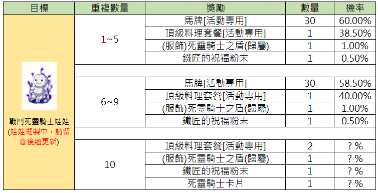
📋 Belohnungsübersicht für Battle Death Knight Doll — Deutsch aufklappen
Diese Tabelle zeigt die Belohnungschancen für das Sammeln von Battle Death Knight Dolls, unterteilt nach der Anzahl der gesammelten Gegenstände.
| Ziel | Anzahl der Wiederholungen | Belohnung | Menge | Wahrscheinlichkeit |
|---|---|---|---|---|
| Battle Death Knight Doll (in Herstellung, bitte auf Updates achten) | 1~5 | Horse Token [Event] | 30 | 60.00% |
| Battle Death Knight Doll (in Herstellung, bitte auf Updates achten) | 1~5 | Top Grade Food Set [Event] | 1 | 38.50% |
| Battle Death Knight Doll (in Herstellung, bitte auf Updates achten) | 1~5 | (Costume) Death Knight Shield [Account Bound] | 1 | 1.00% |
| Battle Death Knight Doll (in Herstellung, bitte auf Updates achten) | 1~5 | Blacksmith Blessing Powder | 1 | 0.50% |
| Battle Death Knight Doll (in Herstellung, bitte auf Updates achten) | 6~9 | Horse Token [Event] | 30 | 58.50% |
| Battle Death Knight Doll (in Herstellung, bitte auf Updates achten) | 6~9 | Top Grade Food Set [Event] | 1 | 40.00% |
| Battle Death Knight Doll (in Herstellung, bitte auf Updates achten) | 6~9 | (Costume) Death Knight Shield [Account Bound] | 1 | 1.00% |
| Battle Death Knight Doll (in Herstellung, bitte auf Updates achten) | 6~9 | Blacksmith Blessing Powder | 1 | 0.50% |
| Battle Death Knight Doll (in Herstellung, bitte auf Updates achten) | 10 | Top Grade Food Set [Event] | 2 | ?% |
| Battle Death Knight Doll (in Herstellung, bitte auf Updates achten) | 10 | (Costume) Death Knight Shield [Account Bound] | 1 | ?% |
| Battle Death Knight Doll (in Herstellung, bitte auf Updates achten) | 10 | Blacksmith Blessing Powder | 1 | ?% |
| Battle Death Knight Doll (in Herstellung, bitte auf Updates achten) | 10 | Death Knight Card | 1 | ?% |
Die Battle Death Knight Doll befindet sich laut Bild aktuell noch in der Implementierungsphase.

📋 Belohnungstabelle für Battle Katrinn Doll — Deutsch aufklappen
Diese Tabelle zeigt die Belohnungen und Gewinnwahrscheinlichkeiten für das Sammeln von 'Battle Katrinn Doll' abhängig von der Menge.
| Ziel | Anzahl Wiederholungen | Belohnung | Menge | Wahrscheinlichkeit |
|---|---|---|---|---|
| Battle Katrinn Doll | 1~5 | Battle Manual (Event) | 1 | 60.00% |
| Battle Katrinn Doll | 1~5 | High-End Food Set [Event] | 1 | 38.50% |
| Battle Katrinn Doll | 1~5 | [Katrinn] Hunting Reward Box (Normal) | 1 | 1.00% |
| Battle Katrinn Doll | 1~5 | Blacksmith Blessing Powder | 1 | 0.50% |
| Battle Katrinn Doll | 6~9 | Battle Manual (Event) | 2 | 58.50% |
| Battle Katrinn Doll | 6~9 | High-End Food Set [Event] | 1 | 40.00% |
| Battle Katrinn Doll | 6~9 | [Katrinn] Hunting Reward Box (Normal) | 1 | 1.00% |
| Battle Katrinn Doll | 6~9 | Blacksmith Blessing Powder | 1 | 0.50% |
| Battle Katrinn Doll | 10 | High-End Food Set [Event] | 2 | ? % |
| Battle Katrinn Doll | 10 | [Katrinn] Hunting Reward Box (Normal) | 1 | ? % |
| Battle Katrinn Doll | 10 | Blacksmith Blessing Powder | 1 | ? % |
| Battle Katrinn Doll | 10 | Katrinn Card | 1 | ? % |
Die mit '? %' gekennzeichneten Werte in der 10er-Kategorie sind im Original nicht spezifiziert.
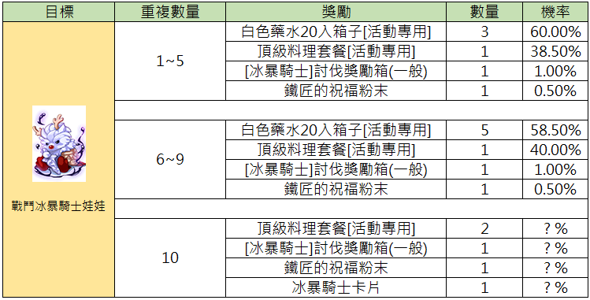
📋 Belohnungstabelle für Battle Ice Knight Doll — Deutsch aufklappen
Diese Tabelle zeigt die Belohnungen und Wahrscheinlichkeiten für das Sammeln der 'Battle Ice Knight Doll', unterteilt nach der Anzahl der Wiederholungen.
| Ziel | Wiederholungen | Belohnung | Anzahl | Wahrscheinlichkeit |
|---|---|---|---|---|
| Battle Ice Knight Doll | 1~5 | White Potion Box 20ea [Event] | 3 | 60.00% |
| Battle Ice Knight Doll | 1~5 | Top-grade Meal [Event] | 1 | 38.50% |
| Battle Ice Knight Doll | 1~5 | [Ice Knight] Hunt Reward Box (Normal) | 1 | 1.00% |
| Battle Ice Knight Doll | 1~5 | Blacksmith Blessing Powder | 1 | 0.50% |
| Battle Ice Knight Doll | 6~9 | White Potion Box 20ea [Event] | 5 | 58.50% |
| Battle Ice Knight Doll | 6~9 | Top-grade Meal [Event] | 1 | 40.00% |
| Battle Ice Knight Doll | 6~9 | [Ice Knight] Hunt Reward Box (Normal) | 1 | 1.00% |
| Battle Ice Knight Doll | 6~9 | Blacksmith Blessing Powder | 1 | 0.50% |
| Battle Ice Knight Doll | 10 | Top-grade Meal [Event] | 2 | ?% |
| Battle Ice Knight Doll | 10 | [Ice Knight] Hunt Reward Box (Normal) | 1 | ?% |
| Battle Ice Knight Doll | 10 | Blacksmith Blessing Powder | 1 | ?% |
| Battle Ice Knight Doll | 10 | Ice Knight Card | 1 | ?% |
Bei 10 Wiederholungen sind die exakten Wahrscheinlichkeiten im UI als unbekannt (?) markiert.

📋 Belohnungsübersicht für Battle Pharaoh Doll — Deutsch aufklappen
Diese Tabelle zeigt die Wahrscheinlichkeiten für verschiedene Belohnungen basierend auf der Anzahl der Wiederholungen beim 'Battle Pharaoh Doll' Event.
| Ziel | Anzahl der Wiederholungen | Belohnung | Menge | Wahrscheinlichkeit |
|---|---|---|---|---|
| Battle Pharaoh Doll | 1~5 | Battle Field Bandage (Event) | 1 | 60.00% |
| Battle Pharaoh Doll | 1~5 | Small Mana Potion (Event) | 2 | 38.50% |
| Battle Pharaoh Doll | 1~5 | (Costume) Pharaoh Coronet (Bound) | 1 | 1.00% |
| Battle Pharaoh Doll | 1~5 | Blacksmith Blessing Powder | 1 | 0.50% |
| Battle Pharaoh Doll | 6~9 | Battle Field Bandage (Event) | 2 | 58.50% |
| Battle Pharaoh Doll | 6~9 | Small Mana Potion (Event) | 3 | 40.00% |
| Battle Pharaoh Doll | 6~9 | (Costume) Pharaoh Coronet (Bound) | 1 | 1.00% |
| Battle Pharaoh Doll | 6~9 | Blacksmith Blessing Powder | 1 | 0.50% |
| Battle Pharaoh Doll | 10 | Small Mana Potion (Event) | 3 | ?% |
| Battle Pharaoh Doll | 10 | (Costume) Pharaoh Coronet (Bound) | 1 | ?% |
| Battle Pharaoh Doll | 10 | Blacksmith Blessing Powder | 1 | ?% |
| Battle Pharaoh Doll | 10 | Pharaoh Card | 1 | ?% |
Die mit '?%' markierten Werte sind in der Vorlage nicht spezifiziert.

📋 Belohnungstabelle für Kampf-Baphomet-Puppe — Deutsch aufklappen
Diese Tabelle zeigt die Belohnungen für das Sammeln der 'Kampf-Baphomet-Puppe' basierend auf der Anzahl der abgegebenen Gegenstände.
| Ziel | Anzahl Wiederholungen | Belohnung | Menge | Chance |
|---|---|---|---|---|
| Kampf-Baphomet-Puppe | 1~5 | White Potion Box 20ea [Event] | 2 | 60.00% |
| Kampf-Baphomet-Puppe | 1~5 | Small Life Potion [Event] | 4 | 38.50% |
| Kampf-Baphomet-Puppe | 1~5 | (Costume) Goat Helm [Account Bound] | 1 | 1.00% |
| Kampf-Baphomet-Puppe | 1~5 | Blacksmith Blessing Powder | 1 | 0.50% |
| Kampf-Baphomet-Puppe | 6~9 | White Potion Box 20ea [Event] | 3 | 58.50% |
| Kampf-Baphomet-Puppe | 6~9 | Small Life Potion [Event] | 5 | 40.00% |
| Kampf-Baphomet-Puppe | 6~9 | (Costume) Goat Helm [Account Bound] | 1 | 1.00% |
| Kampf-Baphomet-Puppe | 6~9 | Blacksmith Blessing Powder | 1 | 0.50% |
| Kampf-Baphomet-Puppe | 10 | Small Life Potion [Event] | 6 | ? % |
| Kampf-Baphomet-Puppe | 10 | (Costume) Goat Helm [Account Bound] | 1 | ? % |
| Kampf-Baphomet-Puppe | 10 | Blacksmith Blessing Powder | 1 | ? % |
| Kampf-Baphomet-Puppe | 10 | Baphomet Card | 1 | ? % |
Die mit '? %' markierten Felder geben die im Screenshot fehlenden Wahrscheinlichkeiten für die 10. Abgabe an.

📋 Belohnungstabelle für Battle Necromancer Doll — Deutsch aufklappen
Diese Tabelle zeigt die Belohnungen und deren Wahrscheinlichkeiten basierend auf der Anzahl der Wiederholungen für den Gegenstand 'Battle Necromancer Doll'.
| Ziel | Wiederholungsanzahl | Belohnung | Anzahl | Wahrscheinlichkeit |
|---|---|---|---|---|
| Battle Necromancer Doll | 1~5 | White Potion Box 20 [Event] | 1 | 60.00% |
| Battle Necromancer Doll | 1~5 | Small Life Potion [Event] | 2 | 38.50% |
| Battle Necromancer Doll | 1~5 | (Costume) Spiky Hairband [Bound] | 1 | 1.00% |
| Battle Necromancer Doll | 1~5 | Blacksmith Blessing Powder | 1 | 0.50% |
| Battle Necromancer Doll | 6~9 | White Potion Box 20 [Event] | 2 | 58.50% |
| Battle Necromancer Doll | 6~9 | Small Life Potion [Event] | 2 | 40.00% |
| Battle Necromancer Doll | 6~9 | (Costume) Spiky Hairband [Bound] | 1 | 1.00% |
| Battle Necromancer Doll | 6~9 | Blacksmith Blessing Powder | 1 | 0.50% |
| Battle Necromancer Doll | 10 | Small Life Potion [Event] | 5 | ? % |
| Battle Necromancer Doll | 10 | (Costume) Spiky Hairband [Bound] | 1 | ? % |
| Battle Necromancer Doll | 10 | Blacksmith Blessing Powder | 1 | ? % |
| Battle Necromancer Doll | 10 | Necromancer Card | 1 | ? % |
Die mit '? %' markierten Wahrscheinlichkeiten sind im Spiel aktuell nicht spezifiziert. 'Bound' steht für Gegenstände, die an den Charakter gebunden sind.

📋 Belohnungstabelle für den Kampf gegen die Dracula-Puppe — Deutsch aufklappen
Diese Tabelle zeigt die potenziellen Belohnungen und deren Wahrscheinlichkeiten basierend auf der Anzahl der Wiederholungen beim Kampf gegen die 'Battle Dracula Doll'.
| Ziel | Wiederholungsanzahl | Belohnung | Menge | Wahrscheinlichkeit |
|---|---|---|---|---|
| Battle Dracula Doll | 1~5 | Blue Potion Box 10 [Event] | 4 | 60.00% |
| Battle Dracula Doll | 1~5 | Small Mana Potion [Event] | 2 | 38.50% |
| Battle Dracula Doll | 1~5 | (Costume) Vampire Mask [Bound] | 1 | 1.00% |
| Battle Dracula Doll | 1~5 | Blacksmith Blessing Powder | 1 | 0.50% |
| Battle Dracula Doll | 6~9 | Blue Potion Box 10 [Event] | 5 | 58.50% |
| Battle Dracula Doll | 6~9 | Small Mana Potion [Event] | 3 | 40.00% |
| Battle Dracula Doll | 6~9 | (Costume) Vampire Mask [Bound] | 1 | 1.00% |
| Battle Dracula Doll | 6~9 | Blacksmith Blessing Powder | 1 | 0.50% |
| Battle Dracula Doll | 10 | Small Mana Potion [Event] | 4 | ? % |
| Battle Dracula Doll | 10 | (Costume) Vampire Mask [Bound] | 1 | ? % |
| Battle Dracula Doll | 10 | Blacksmith Blessing Powder | 1 | ? % |
| Battle Dracula Doll | 10 | Dracula Card | 1 | ? % |
Die Tabelle illustriert Belohnungsstufen für ein Event. Bei 10 Wiederholungen sind die exakten Wahrscheinlichkeiten im Spiel nicht spezifiziert (angezeigt als ? %).

📋 Belohnungstabelle für den Kampf gegen die Dark Lord Puppe — Deutsch aufklappen
Diese Tabelle listet die Belohnungen basierend auf der Anzahl der Wiederholungen für die Dark Lord Puppe auf.
| Ziel | Wiederholungen | Belohnung | Anzahl | Wahrscheinlichkeit |
|---|---|---|---|---|
| Dark Lord Doll (in Produktion) | 1~5 | Blue Potion Box(10ea)[Event] | 3 | 60.00% |
| Dark Lord Doll (in Produktion) | 1~5 | Small Mana Potion[Event] | 2 | 38.50% |
| Dark Lord Doll (in Produktion) | 1~5 | Dark Lord Reward Box(Normal) | 1 | 1.00% |
| Dark Lord Doll (in Produktion) | 1~5 | Blacksmith Blessing Powder | 1 | 0.50% |
| Dark Lord Doll (in Produktion) | 6~9 | Blue Potion Box(10ea)[Event] | 5 | 58.50% |
| Dark Lord Doll (in Produktion) | 6~9 | Small Mana Potion[Event] | 3 | 40.00% |
| Dark Lord Doll (in Produktion) | 6~9 | Dark Lord Reward Box(Normal) | 1 | 1.00% |
| Dark Lord Doll (in Produktion) | 6~9 | Blacksmith Blessing Powder | 1 | 0.50% |
| Dark Lord Doll (in Produktion) | 10 | Small Mana Potion[Event] | 3 | ? % |
| Dark Lord Doll (in Produktion) | 10 | Dark Lord Reward Box(Normal) | 1 | ? % |
| Dark Lord Doll (in Produktion) | 10 | Blacksmith Blessing Powder | 1 | ? % |
| Dark Lord Doll (in Produktion) | 10 | Dark Lord Card | 1 | ? % |
Die Fußnote besagt, dass die Puppe derzeit in der Herstellung/Überarbeitung ist und man auf zukünftige Updates achten soll.
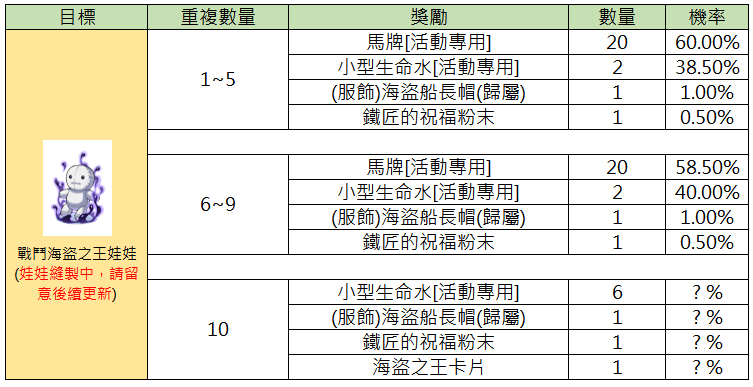
📋 Belohnungsübersicht für Battle Pirate King Doll — Deutsch aufklappen
Diese Tabelle zeigt die Belohnungen und Gewinnchancen für das Item 'Battle Pirate King Doll' basierend auf der Anzahl der Wiederholungen.
| Ziel | Wiederholungen | Belohnung | Menge | Wahrscheinlichkeit |
|---|---|---|---|---|
| Battle Pirate King Doll (Herstellung der Puppe läuft, bitte auf Updates achten) | 1~5 | Horse Token [Event] | 20 | 60.00% |
| 1~5 | Small Life Potion [Event] | 2 | 38.50% | |
| 1~5 | (Costume) Pirate Captain Hat [Bound] | 1 | 1.00% | |
| 1~5 | Blacksmith Blessing Powder | 1 | 0.50% | |
| 6~9 | Horse Token [Event] | 20 | 58.50% | |
| 6~9 | Small Life Potion [Event] | 2 | 40.00% | |
| 6~9 | (Costume) Pirate Captain Hat [Bound] | 1 | 1.00% | |
| 6~9 | Blacksmith Blessing Powder | 1 | 0.50% | |
| 10 | Small Life Potion [Event] | 6 | ? % | |
| 10 | (Costume) Pirate Captain Hat [Bound] | 1 | ? % | |
| 10 | Blacksmith Blessing Powder | 1 | ? % | |
| 10 | Drake Card | 1 | ? % |
Die Daten für die 10. Wiederholung sind aktuell noch unbekannt (?%).
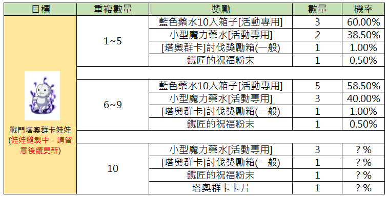
📋 Belohnungstabelle für den Kampf gegen den Tao Gunka Doll — Deutsch aufklappen
Diese Tabelle zeigt die Belohnungen und Wahrscheinlichkeiten für das Besiegen der Tao Gunka Doll, unterteilt nach der Anzahl der Wiederholungen.
| Ziel | Wiederholungsanzahl | Belohnung | Anzahl | Wahrscheinlichkeit |
|---|---|---|---|---|
| Battle Tao Gunka Doll (Doll stitching in progress, please stay tuned for future updates) | 1~5 | Blue Potion Box 10ea [Event] | 3 | 60.00% |
| 1~5 | Small Mana Potion [Event] | 2 | 38.50% | |
| 1~5 | [Tao Gunka] Hunting Reward Box (Normal) | 1 | 1.00% | |
| 1~5 | Blacksmith Blessing Powder | 1 | 0.50% | |
| 6~9 | Blue Potion Box 10ea [Event] | 5 | 58.50% | |
| 6~9 | Small Mana Potion [Event] | 3 | 40.00% | |
| 6~9 | [Tao Gunka] Hunting Reward Box (Normal) | 1 | 1.00% | |
| 6~9 | Blacksmith Blessing Powder | 1 | 0.50% | |
| 10 | Small Mana Potion [Event] | 3 | ? % | |
| 10 | [Tao Gunka] Hunting Reward Box (Normal) | 1 | ? % | |
| 10 | Blacksmith Blessing Powder | 1 | ? % | |
| 10 | Tao Gunka Card | 1 | ? % |
Die mit '? %' markierten Wahrscheinlichkeiten für die 10. Wiederholung sind aktuell unbekannt oder noch nicht implementiert.

📋 Belohnungstabelle für Kampf-Osiris-Puppe — Deutsch aufklappen
Diese Tabelle zeigt die Belohnungen und Gewinnwahrscheinlichkeiten für das Sammeln der 'Battle Osiris Doll' in Ragnarok Zero, unterteilt nach der Anzahl der Wiederholungen.
| Ziel | Wiederholungen | Belohnung | Anzahl | Wahrscheinlichkeit |
|---|---|---|---|---|
| Battle Osiris Doll | 1~5 | Horse Token [Event] | 20 | 60.00% |
| Battle Osiris Doll | 1~5 | Small Life Potion [Event] | 2 | 38.50% |
| Battle Osiris Doll | 1~5 | (Costume) Crown (Bound) | 1 | 1.00% |
| Battle Osiris Doll | 1~5 | Blacksmith Blessing Powder | 1 | 0.50% |
| Battle Osiris Doll | 6~9 | Horse Token [Event] | 20 | 58.50% |
| Battle Osiris Doll | 6~9 | Small Life Potion [Event] | 3 | 40.00% |
| Battle Osiris Doll | 6~9 | (Costume) Crown (Bound) | 1 | 1.00% |
| Battle Osiris Doll | 6~9 | Blacksmith Blessing Powder | 1 | 0.50% |
| Battle Osiris Doll | 10 | Small Life Potion [Event] | 6 | ? % |
| Battle Osiris Doll | 10 | (Costume) Crown (Bound) | 1 | ? % |
| Battle Osiris Doll | 10 | Blacksmith Blessing Powder | 1 | ? % |
| Battle Osiris Doll | 10 | Osiris Card | 1 | ? % |
Die Werte für die 10. Wiederholung sind aktuell nicht spezifiziert (? %). 'Bound' bezieht sich auf accountgebundene Gegenstände.
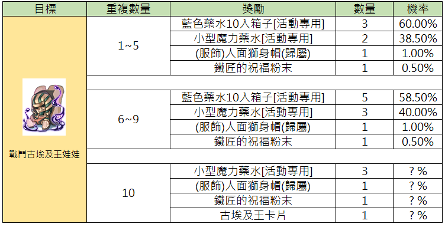
📋 Belohnungstabelle für Battle Ancient Mummy Doll — Deutsch aufklappen
Diese Tabelle zeigt die Belohnungen und Gewinnchancen für das 'Battle Ancient Mummy Doll'-Event basierend auf der Anzahl der Wiederholungen.
| Ziel | Wiederholungsanzahl | Belohnung | Menge | Wahrscheinlichkeit |
|---|---|---|---|---|
| Battle Ancient Mummy Doll | 1~5 | Blue Potion Box (Event) (10ea) | 3 | 60.00% |
| Battle Ancient Mummy Doll | 1~5 | Small Mana Potion (Event) | 2 | 38.50% |
| Battle Ancient Mummy Doll | 1~5 | (Costume) Sphinx Hat (Account Bound) | 1 | 1.00% |
| Battle Ancient Mummy Doll | 1~5 | Blacksmith Blessing Powder | 1 | 0.50% |
| Battle Ancient Mummy Doll | 6~9 | Blue Potion Box (Event) (10ea) | 5 | 58.50% |
| Battle Ancient Mummy Doll | 6~9 | Small Mana Potion (Event) | 3 | 40.00% |
| Battle Ancient Mummy Doll | 6~9 | (Costume) Sphinx Hat (Account Bound) | 1 | 1.00% |
| Battle Ancient Mummy Doll | 6~9 | Blacksmith Blessing Powder | 1 | 0.50% |
| Battle Ancient Mummy Doll | 10 | Small Mana Potion (Event) | 3 | ?% |
| Battle Ancient Mummy Doll | 10 | (Costume) Sphinx Hat (Account Bound) | 1 | ?% |
| Battle Ancient Mummy Doll | 10 | Blacksmith Blessing Powder | 1 | ?% |
| Battle Ancient Mummy Doll | 10 | Ancient Mummy Card | 1 | ?% |
Die Werte mit '?%' geben an, dass die exakten Wahrscheinlichkeiten für die 10. Wiederholungsstufe in der Anzeige nicht explizit aufgeführt sind.
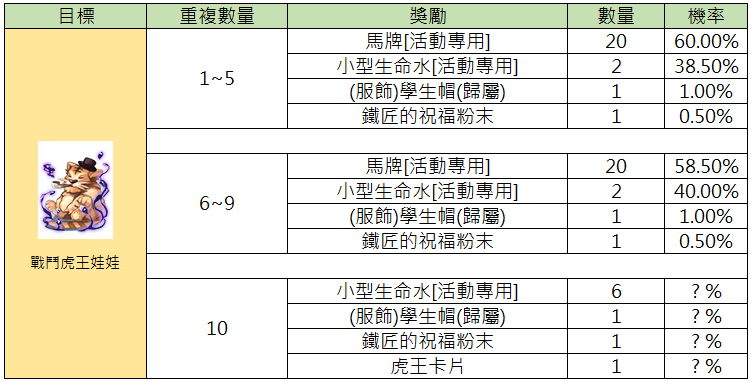
📋 Belohnungstabelle für Battle Tiger King Doll — Deutsch aufklappen
Diese Tabelle zeigt die Belohnungen und Gewinnchancen für die 'Battle Tiger King Doll' basierend auf der Anzahl der Wiederholungen.
| Ziel | Anzahl der Wiederholungen | Belohnung | Menge | Chance |
|---|---|---|---|---|
| Battle Tiger King Doll | 1~5 | Horse Token [Event] | 20 | 60.00% |
| Battle Tiger King Doll | 1~5 | Small Life Potion [Event] | 2 | 38.50% |
| Battle Tiger King Doll | 1~5 | (Costume) Student Hat [Bound] | 1 | 1.00% |
| Battle Tiger King Doll | 1~5 | Blacksmith Blessing Powder | 1 | 0.50% |
| Battle Tiger King Doll | 6~9 | Horse Token [Event] | 20 | 58.50% |
| Battle Tiger King Doll | 6~9 | Small Life Potion [Event] | 2 | 40.00% |
| Battle Tiger King Doll | 6~9 | (Costume) Student Hat [Bound] | 1 | 1.00% |
| Battle Tiger King Doll | 6~9 | Blacksmith Blessing Powder | 1 | 0.50% |
| Battle Tiger King Doll | 10 | Small Life Potion [Event] | 6 | ?% |
| Battle Tiger King Doll | 10 | (Costume) Student Hat [Bound] | 1 | ?% |
| Battle Tiger King Doll | 10 | Blacksmith Blessing Powder | 1 | ?% |
| Battle Tiger King Doll | 10 | Tiger King Card | 1 | ?% |
Die Werte in der Spalte 'Chance' für 10 Wiederholungen sind im Spiel nicht spezifiziert.
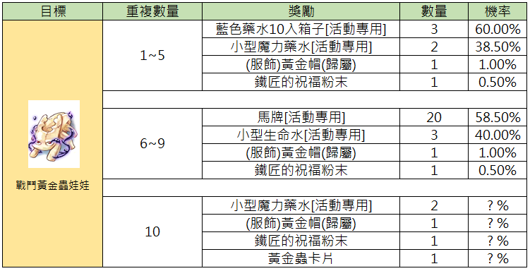
📋 Belohnungstabelle für Battle Golden Bug Doll — Deutsch aufklappen
Diese Tabelle zeigt die Belohnungen für das Sammeln der Battle Golden Bug Doll, unterteilt nach Häufigkeit und den entsprechenden Wahrscheinlichkeiten.
| Ziel | Wiederholungsanzahl | Belohnung | Anzahl | Wahrscheinlichkeit |
|---|---|---|---|---|
| Battle Golden Bug Doll | 1~5 | Blue Potion Box (Event) (Account Bound) | 3 | 60.00% |
| Battle Golden Bug Doll | 1~5 | Small Mana Potion (Event) (Account Bound) | 2 | 38.50% |
| Battle Golden Bug Doll | 1~5 | (Costume) Golden Hat (Account Bound) | 1 | 1.00% |
| Battle Golden Bug Doll | 1~5 | Blacksmith Blessing Powder | 1 | 0.50% |
| Battle Golden Bug Doll | 6~9 | Horse Token (Event) (Account Bound) | 20 | 58.50% |
| Battle Golden Bug Doll | 6~9 | Small Life Potion (Event) (Account Bound) | 3 | 40.00% |
| Battle Golden Bug Doll | 6~9 | (Costume) Golden Hat (Account Bound) | 1 | 1.00% |
| Battle Golden Bug Doll | 6~9 | Blacksmith Blessing Powder | 1 | 0.50% |
| Battle Golden Bug Doll | 10 | Small Mana Potion (Event) (Account Bound) | 2 | ?% |
| Battle Golden Bug Doll | 10 | (Costume) Golden Hat (Account Bound) | 1 | ?% |
| Battle Golden Bug Doll | 10 | Blacksmith Blessing Powder | 1 | ?% |
| Battle Golden Bug Doll | 10 | Golden Bug Card | 1 | ?% |
Die Werte für die 10. Wiederholung sind im Spiel derzeit nicht spezifiziert (angezeigt als ?%). 'Account Bound' wurde für die Kennzeichnung 歸屬 hinzugefügt.
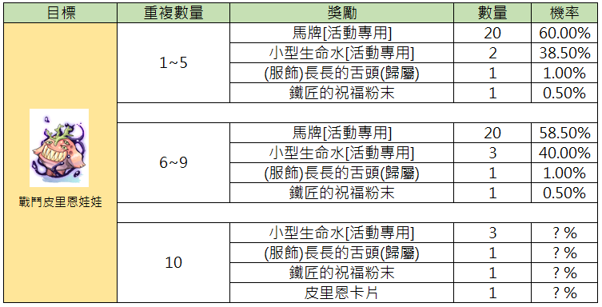
📋 Beliebens Doll Belohnungstabelle — Deutsch aufklappen
Diese Tabelle zeigt die Belohnungsraten für das Öffnen der Battle Beliebens Doll, unterteilt nach der Anzahl der Wiederholungen.
| Ziel | Anzahl Wiederholungen | Belohnung | Menge | Wahrscheinlichkeit |
|---|---|---|---|---|
| Battle Beliebens Doll | 1~5 | Horse Token [Event] | 20 | 60.00% |
| Battle Beliebens Doll | 1~5 | Small Life Potion [Event] | 2 | 38.50% |
| Battle Beliebens Doll | 1~5 | (Costume) Long Tongue (Bound) | 1 | 1.00% |
| Battle Beliebens Doll | 1~5 | Blacksmith Blessing Powder | 1 | 0.50% |
| Battle Beliebens Doll | 6~9 | Horse Token [Event] | 20 | 58.50% |
| Battle Beliebens Doll | 6~9 | Small Life Potion [Event] | 3 | 40.00% |
| Battle Beliebens Doll | 6~9 | (Costume) Long Tongue (Bound) | 1 | 1.00% |
| Battle Beliebens Doll | 6~9 | Blacksmith Blessing Powder | 1 | 0.50% |
| Battle Beliebens Doll | 10 | Small Life Potion [Event] | 3 | ? % |
| Battle Beliebens Doll | 10 | (Costume) Long Tongue (Bound) | 1 | ? % |
| Battle Beliebens Doll | 10 | Blacksmith Blessing Powder | 1 | ? % |
| Battle Beliebens Doll | 10 | Beliebens Card | 1 | ? % |
Die mit '10' markierte Zeile zeigt die garantierten oder potenziellen Belohnungen bei der zehnten Wiederholung an.
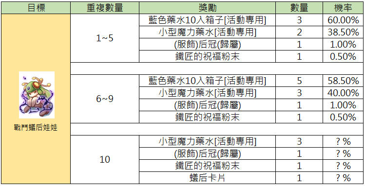
📋 Belohnungstabelle für Battle Queen Bee Puppe — Deutsch aufklappen
Diese Tabelle listet die Belohnungen und Wahrscheinlichkeiten für die Battle Queen Bee Puppe basierend auf der Anzahl der Wiederholungen auf.
| Ziel | Wiederholungsanzahl | Belohnung | Anzahl | Wahrscheinlichkeit |
|---|---|---|---|---|
| Battle Queen Bee Puppe | 1~5 | Blue Potion Box(10) [Event] | 3 | 60.00% |
| Battle Queen Bee Puppe | 1~5 | Small Mana Potion [Event] | 2 | 38.50% |
| Battle Queen Bee Puppe | 1~5 | (Costume) Tiara [Bound] | 1 | 1.00% |
| Battle Queen Bee Puppe | 1~5 | Blacksmith Blessing Powder | 1 | 0.50% |
| Battle Queen Bee Puppe | 6~9 | Blue Potion Box(10) [Event] | 5 | 58.50% |
| Battle Queen Bee Puppe | 6~9 | Small Mana Potion [Event] | 3 | 40.00% |
| Battle Queen Bee Puppe | 6~9 | (Costume) Tiara [Bound] | 1 | 1.00% |
| Battle Queen Bee Puppe | 6~9 | Blacksmith Blessing Powder | 1 | 0.50% |
| Battle Queen Bee Puppe | 10 | Small Mana Potion [Event] | 3 | ? % |
| Battle Queen Bee Puppe | 10 | (Costume) Tiara [Bound] | 1 | ? % |
| Battle Queen Bee Puppe | 10 | Blacksmith Blessing Powder | 1 | ? % |
| Battle Queen Bee Puppe | 10 | Queen Bee Card | 1 | ? % |
Die Spalte 'Ziel' zeigt das Event-Item 'Battle Queen Bee Puppe'. [Bound] bezieht sich auf an den Charakter gebundene Gegenstände.

📋 Belohnungsübersicht für Battle Moonlight Cat Doll — Deutsch aufklappen
Diese Tabelle zeigt die Belohnungen und Gewinnchancen für die Battle Moonlight Cat Doll basierend auf der Anzahl der Wiederholungen.
| Ziel | Wiederholungen | Belohnung | Menge | Chance |
|---|---|---|---|---|
| Battle Moonlight Cat Doll | 1~5 | Blue Potion Box (10) [Event] | 3 | 60.00% |
| Battle Moonlight Cat Doll | 1~5 | Small Mana Potion [Event] | 2 | 38.50% |
| Battle Moonlight Cat Doll | 1~5 | (Costume) Moonlight Cat Bell [Bound] | 1 | 1.00% |
| Battle Moonlight Cat Doll | 1~5 | Blacksmith Blessing Powder | 1 | 0.50% |
| Battle Moonlight Cat Doll | 6~9 | Blue Potion Box (10) [Event] | 5 | 58.50% |
| Battle Moonlight Cat Doll | 6~9 | Small Mana Potion [Event] | 3 | 40.00% |
| Battle Moonlight Cat Doll | 6~9 | (Costume) Moonlight Cat Bell [Bound] | 1 | 1.00% |
| Battle Moonlight Cat Doll | 6~9 | Blacksmith Blessing Powder | 1 | 0.50% |
| Battle Moonlight Cat Doll | 10 | Small Mana Potion [Event] | 3 | ? % |
| Battle Moonlight Cat Doll | 10 | (Costume) Moonlight Cat Bell [Bound] | 1 | ? % |
| Battle Moonlight Cat Doll | 10 | Blacksmith Blessing Powder | 1 | ? % |
| Battle Moonlight Cat Doll | 10 | Moonlight Cat Card | 1 | ? % |
Die mit '? %' markierten Chancen sind im Bild nicht spezifiziert.

📋 Belohnungstabelle für Kampf-Orc-Hero-Puppe — Deutsch aufklappen
Diese Tabelle zeigt die Drop-Wahrscheinlichkeiten für Belohnungen basierend auf der Anzahl der gesammelten 'Battle Orc Hero Doll'-Gegenstände.
| Ziel | Wiederholungsanzahl | Belohnung | Menge | Wahrscheinlichkeit |
|---|---|---|---|---|
| Battle Orc Hero Doll | 1~5 | Horse Token [Event] | 20 | 60.00% |
| Battle Orc Hero Doll | 1~5 | Small Life Potion [Event] | 2 | 38.50% |
| Battle Orc Hero Doll | 1~5 | (Costume) Orc Hero Helm [Bound] | 2 | 1.00% |
| Battle Orc Hero Doll | 1~5 | Blacksmith Blessing Powder | 1 | 0.50% |
| Battle Orc Hero Doll | 6~9 | Horse Token [Event] | 20 | 58.50% |
| Battle Orc Hero Doll | 6~9 | Small Life Potion [Event] | 3 | 40.00% |
| Battle Orc Hero Doll | 6~9 | (Costume) Orc Hero Helm [Bound] | 1 | 1.00% |
| Battle Orc Hero Doll | 6~9 | Blacksmith Blessing Powder | 1 | 0.50% |
| Battle Orc Hero Doll | 10 | Small Life Potion [Event] | 6 | ? % |
| Battle Orc Hero Doll | 10 | (Costume) Orc Hero Helm [Bound] | 1 | ? % |
| Battle Orc Hero Doll | 10 | Blacksmith Blessing Powder | 1 | ? % |
| Battle Orc Hero Doll | 10 | Orc Hero Card | 1 | ? % |
Die 'Wiederholungsanzahl' gibt an, wie oft das Item für die jeweilige Belohnungsstufe abgegeben wurde. '[Event]' markiert zeitlich begrenzte Aktionsgegenstände.
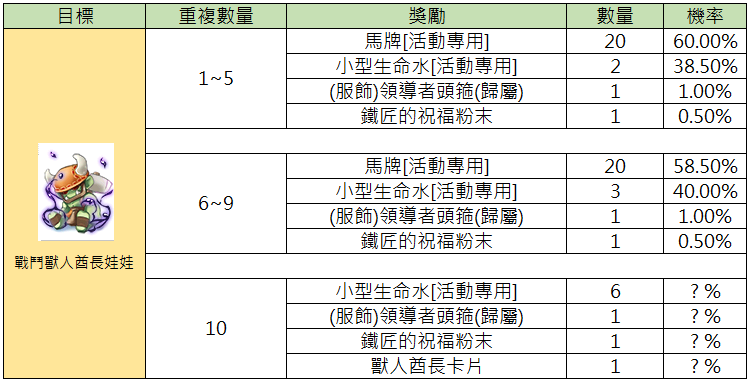
📋 Belohnungstabelle für Kampf-Orc-Häuptling Puppe — Deutsch aufklappen
Diese Tabelle zeigt die Belohnungsraten für das Sammeln der 'Kampf-Orc-Häuptling Puppe' basierend auf der Anzahl der Wiederholungen.
| Ziel | Wiederholungsanzahl | Belohnung | Menge | Wahrscheinlichkeit |
|---|---|---|---|---|
| Kampf-Orc-Häuptling Puppe | 1~5 | Horse Token [Event] | 20 | 60.00% |
| Kampf-Orc-Häuptling Puppe | 1~5 | Small Life Potion [Event] | 2 | 38.50% |
| Kampf-Orc-Häuptling Puppe | 1~5 | (Costume) Leader Circlet [Account Bound] | 1 | 1.00% |
| Kampf-Orc-Häuptling Puppe | 1~5 | Blacksmith Blessing Powder | 1 | 0.50% |
| Kampf-Orc-Häuptling Puppe | 6~9 | Horse Token [Event] | 20 | 58.50% |
| Kampf-Orc-Häuptling Puppe | 6~9 | Small Life Potion [Event] | 3 | 40.00% |
| Kampf-Orc-Häuptling Puppe | 6~9 | (Costume) Leader Circlet [Account Bound] | 1 | 1.00% |
| Kampf-Orc-Häuptling Puppe | 6~9 | Blacksmith Blessing Powder | 1 | 0.50% |
| Kampf-Orc-Häuptling Puppe | 10 | Small Life Potion [Event] | 6 | ?% |
| Kampf-Orc-Häuptling Puppe | 10 | (Costume) Leader Circlet [Account Bound] | 1 | ?% |
| Kampf-Orc-Häuptling Puppe | 10 | Blacksmith Blessing Powder | 1 | ?% |
| Kampf-Orc-Häuptling Puppe | 10 | Orc Hero Card | 1 | ?% |
Die mit '?' markierten Wahrscheinlichkeiten sind im Spiel nicht spezifiziert.
💡 Praxis-Tipps
- MVP-Prio: Weil MVP-Respawns selten sind, lohnt es sich, die eigene MVP-Farming-Route auf möglichst viele unterschiedliche Doll-Quellen auszurichten
- Guild-Koordination: Viele MVPs sind umkämpft — Gildenplan & Timer-Bot können den Doll-Drop-Zugang sichern
- Tier-Strategie: Beim aller Daily lieber 1 MVP-Puppe claimen als 10 Normal Dolls — die Reward-Discrepancy ist deutlich